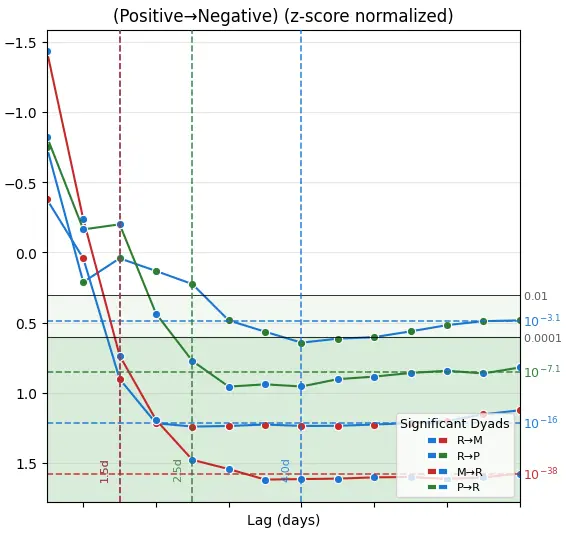

Complex systems · Computational art · Visual modeling
Systems and Simulations
Computational art, artificial life, cellular automata, terrain visualization, remote sensing, environmental data, and experiments with language, number, and form.
Systems and Simulations gathers Raven Carrigg’s computational art, complex systems experiments, remote sensing visualizations, mathematical modeling, and interdisciplinary research work.
These projects grow from a background in applied mathematics, computational modeling, environmental data analysis, creative coding, research, and documentation. They explore how form emerges from rules, data, feedback, spatial structure, nonlinear interaction, and time.
Across artificial life, cellular automata, LANDSAT time series, social dynamics, digital elevation models, biomechanics, and computational poetics, these projects treat language and number as neighboring abstractions for noticing pattern, tracing transformation, and giving shape to complexity without making it simple.
Artificial life
Lenia and Orbium
Lenia is a continuous cellular automaton for artificial life, developed by Bert Wang-Chak Chan. Orbium is one of its most recognizable self-organizing lifeforms: a small computational organism whose motion and persistence emerge from local update rules.
Reference: Bert Wang-Chak Chan, Lenia: Biology of Artificial Life, 2019.
Remote sensing
LANDSAT time series
These time series are processed remote-sensing visualizations created with LANDSAT imagery in SentinelHub. They use false-color, natural-color, and NDVI treatments to show environmental and spatial change across decades: glacial retreat, vegetation recovery, urban expansion, agricultural mosaics, volcanic landscape recovery, and changing water boundaries.
Computational poetics
Language, recombination, and nonlinear memory
This project treats personal archival writing as a living text system: a field of fragments, motifs, images, repetitions, and emotional signals that can be filtered, recombined, and re-arranged into new poetic structures. In this work, computational poetics became a way to listen for patterns across time: recurring images, emotional echoes, ruptures, contradictions, and fragments of language that began to speak differently when placed in new relation to one another.
Archival fragments, Markov-inspired recombination, and GNOEMs
The method began with more than 111,000 words of personal writing spanning over a decade. From that archive, metaphor-dense fragments were selected and processed through phrase-level recombination inspired by Markov chains and n-grams, producing cross-era constellations of language.
The final poems were manually selected, arranged, edited, and shaped into GNOEMs for the poetry collection Liminal Afterhood, where computational recombination became a way of listening for nonlinear memory, trauma crosstalk, recurrence, rupture, and emergent meaning.
The term GNOEM is used here as a personal adaptation of generative poem, inspired by the human-computer poetry experiments documented at Gnoetry Daily.
Social systems
Integrate-and-fire network model of group dynamics
This project explores human group dynamics as an integrate-and-fire network driven by LLM-based sentiment classification of text data. Granger causality analysis identifies significant directional relationships, lags, and influence patterns between sentiment dyads, which are then used to shape the simulated network.
Text data was classified using Claude 3.5 Haiku to generate sentiment signals for the simulation. The model is exploratory rather than predictive: it uses time-series analysis, sentiment dynamics, and firing thresholds to investigate how local affective signals can produce emergent group-level patterns, phase shifts, and critical transitions.

Biomechanics
Squat biomechanics study
This independent biomechanics study modeled attainable back squat depth as a function of body-segment length ratios, ankle dorsiflexion range of motion, and joint constraints, then tested the model against Notch® accelerometer and video-frame data from 80 healthy adults.

Attainable squat depth, anatomy, and movement constraints
This project combines geometric modeling, constrained optimization, anthropometric measurement, wearable-sensor data, and video analysis to examine why squat depth varies across bodies.
The study found that ankle dorsiflexion and lower-body-to-torso segment ratios were meaningfully associated with attainable squat depth, challenging one-size-fits-all standards of squat technique.
Terrain visualization
Digital elevation models
These QGIS-based digital elevation model visualizations translate terrain into color, relief, drainage, and structure. They show landform as pattern: volcanic fields, river islands, channels, ridges, and subtle surface memory.

Undergraduate thesis
Advection, forest turbulence, and carbon fluxes
Raven’s undergraduate thesis developed a theoretical model of sensible heat transport in heterogeneous forest terrain, using micrometeorological data from a mature Douglas-fir site in the Oregon Coast Range to examine advection, turbulence, storage, and energy balance closure.

Is Advection Important?
This thesis evaluates whether common simplifying assumptions, including horizontal homogeneity, uniform gradients, and zero advection, hold in complex forest terrain.
The work connects fluid dynamics, boundary-layer meteorology, ecological measurement, and carbon-cycle questions by exploring whether sensible heat advection can help explain subcanopy carbon loss.
Cellular automata
Cyclic cellular automata
Cyclic cellular automata use simple local rules to produce traveling waves, spirals, domains, collisions, and other emergent spatial patterns. These images explore rule-based pattern formation through color, repetition, and nonlinear interaction.


Cyclic cellular automata were developed by David Griffeath. Rule notation and examples here follow the cyclic cellular automata framing described by Softology.